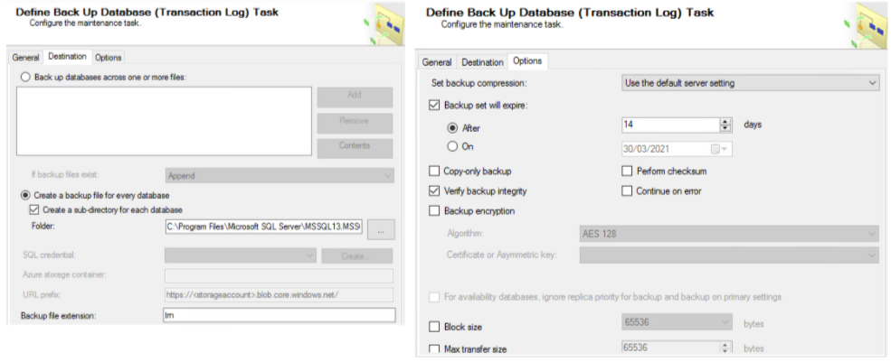

Overview of database transaction logs backups
Objective
- Outline guidance and approach of considerations to be given to database transaction log (TX Log) Backups which when combined with regular robust backups give you a much shorter database RPO/RTO and will go towards minimising potential data loss.
Disclaimer
This detail is provided as guidance only.
Changes made to your database maintenance plans and your regular backup regime are made at your own risk.
Test your policies on non-production databases first, before rolling out to your database estate at large.
The detail given here is for Microsoft SQL server. Although the procedures here may vary between alternate SQL and database formats the principles are essentially the same.
What are transaction logs ?
Transaction logs (TX Logs) are a history of actions executed by a database management system
Physically, the TX Log is a file listing changes to the database, stored in a stable storage format which can be played back into the database after a restore from the primary backup has been carried out.
Why use transaction log backups?
A transaction log backup allows you to restore a database to a particular point-in-time before the failure has occurred. A clearly defined RPO will drive the frequency of transaction log file backups.
It is incremental, meaning that in order to restore a database to a certain point-in-time, all transaction log records are required to replay database changes up to that particular point-in-time.
TX log backups enable mission critical databases to be restored to a point in between daily backups thus providing much better resilience.
Minimises data loss - Transaction logging redoes/undoes transactions not written to disk or partial transactions following an outage.
Transaction log backups aid in the event of a recent data corruption. They can be used to recover to a desired point in time post backup restoration before the aforementioned corruption occurred. This can save a lot of time by negating the requirement to re-enter a whole days worth of data. Instead it will put you in the position to only have to re-enter the data AFTER the issue had arisen.
Transaction log backup frequency for databases should be considered when setting your Maximum Tolerable Period for Disruption (MTPD*) in your change control for maintenance windows. (MTPD definition – term used to describe the time it would take for adverse impacts, which might arise as a result of not providing a product/service or performing an activity to become unacceptable)
This backup frequency will also be driven by the RPO for each system
How a sequence of log backups works
| Time | Event |
|---|---|
| 0800 | Back up database |
| 1200 | Back up transaction log |
| 1600 | Back up transaction log |
| 1800 | Back up database |
| 2000 | Back up transaction log |
The transaction log backup created at 2000 contains transaction log records from 4:00 PM through 8:00 PM - the time since the last Transaction Log Backup.
- Reference : https://docs.microsoft.com/en-us/sql/relational-databases/backup-restore/transaction-log-backups-sql-server?view=sql-server-ver15
In the timeframe here, if a failure were to occur at 2145 you have two recovery options. Firstly create a “tail-log backup” of the currently active transaction log as of the point of failure. Source procedure: https://docs.microsoft.com/en-us/sql/relational-databases/backup-restore/back-up-the-transaction-log-when-the-database-is-damaged-sql-server?view=sql-server-ver15
Options:
1 Do not restore the 0800 full database backup. Instead, restore the more recent 1800 full database backup, and then apply the 2000 log backup and then the tail-log backup.
2 Restore the 0800 full database backup, and then restore all four transaction log backups in sequence. This rolls forward all completed transactions up to 2145.
How often should I take a transaction log backup?
Taking a transaction log backup every 15 to 30 minutes might be enough for a typical database. If your business requires that you minimize work-loss exposure, consider taking log backups more frequently.
Ask yourself: How many transactions can you afford to lose before you lose your business, or at least hurt its reputation?
This in turn guides you to how often you should take a TX Log backup.
Example : How many transactions take place on a database in an hour? If it is only one per hour and each transaction alone is not necessarily a critical change then doing a transaction log backup every seven or ten hours could be fine. In this scenario at most you would lose ten transactions in a worst case scenario. However, if hundreds or thousands of changes take place every few minutes then a more frequent transaction log backup is better to protect data.
Microsoft recommendations Reference : https://docs.microsoft.com/en-us/sql/relational-databases/backup-restore/transaction-log-backups-sql-server?view=sql-server-ver15
If a transaction log is damaged, work that is performed since the most recent valid backup is lost. Therefore, we strongly recommend that you put your log files on fault-tolerant storage.
If a database is damaged or you are about to restore the database, we recommend that you create a tail-log backup to enable you to restore the database to the current point in time.
By default, every successful backup operation adds an entry in the SQL Server error log and in the system event log. If back up the log very frequently, these success messages accumulate quickly, resulting in huge error logs that can make finding other messages difficult. In such cases you can suppress these log entries by using trace flag 3226 if none of your scripts depend on those entries. For more information, see Trace Flags (Transact-SQL).
Take frequent enough log backups to support your business requirements, specifically your tolerance for work loss such as might be caused by a damaged log storage.
The appropriate frequency for taking log backups depends on your tolerance for work-loss exposure balanced by how many log backups you can store, manage, and, potentially, restore. Think about the required RTO and RPO when implementing your recovery strategy.
Taking a log backup every 15 to 30 minutes might be enough. If your business requires that you minimize work-loss exposure, consider taking log backups more frequently. More frequent log backups have the added advantage of increasing the frequency of log truncation, resulting in smaller log files.
System Requirements
Each database you require transaction log backups for will require you set the ‘Recovery Model’ to be FULL.
You will need sufficient disk space to cope with the transaction logs until they have been committed to the Database. It is space that will be well worth investing in if insufficient storage space is available. A Critical Database that can be recovered almost to the point of server failure is worth the storage expenditure.
Ideally be able to ship the transaction log backups to another server in case of a total loss of the SQL server in question. The use of powershell or command line scripts scheduled to run at regular intervals is a convenient way to do this.
Guide to implementation on SQL
- Step 1: Preparation
- Step 2: Create a Maintenance Plan for the Database
- Step 3: Test the Maintenance Plan
- Step 4: Ship Log Files off the Server
Implementation on Oracle Databases will require following the guidance from your Oracle support team and is not covered further in this pack.
Step 1 : Preparation
Set the following items - Backup Location - Create a folder on a different location to the database ideally
Eg E:\TXLOG
- Recovery Model
- Ensure Recovery Model is set to Full (see next slide) for each database.
- Ensure SQL Agent is running (with sufficient privileges)
Recovery Model
The required recovery model to utilise Transaction Log Backups is ‘Full’. You can check and change this on a Database by Database basis by opening the properties of a Database, Options page, Recovery Model. If not Full, change it to this.

Step 2 : Create a maintenance plan
Create a maintenance plan for the databases you wish to group together (or create individual ones if so desired).
SQL Management Studio
Management
R-Click ‘Maintenance Plans’ and select ‘Maintenance Plan Wizard’
Name it logically, and set the schedule as decided (this can be changed)
Select the required parts of the plan, at a minimum of Back Up Database (Transaction Log).
On the Define Back Up Database (Transaction Log) Task select your required databases (or All User Databases or All Databases) - depending on your requirements.

Select ‘Create a sub-directory for each database’ - this makes locating backup files easier.
On the Options tab set the expiry dates for the backups (else they will just keep going) and any other required settings you may want.
Then Save the plan.

Step 3 : Test the maintenance plan
Execute the Maintenance plan you created in Step 2 manually.
Review the contents of the folder you targeted for the TX Log Backups
Check the Log files
Step 4 : Ship Log Files off the Server (Optional but preferred)
In the event of a total server loss, it would be beneficial to have the backup files copied off the server at regular intervals to facilitate a shorter RPO
Create a script that copies the TX Log Backup Folder to an off server destination
Schedule the script to run regularly throughout the day
Check the operation of the file copies
Additional considerations
Backup the TX Log Backups!
- The primary TX Log backup destination should be backed up as part of the full SQL server backup.
Regular testing!
- As part of your BC/DR planning regularly carry out a simulation of a SQL server recovery (in a sandbox environment) to test the efficacy of your procedures.